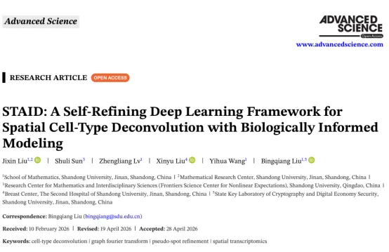
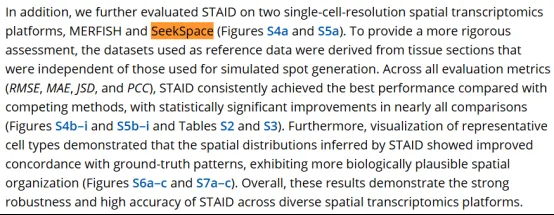
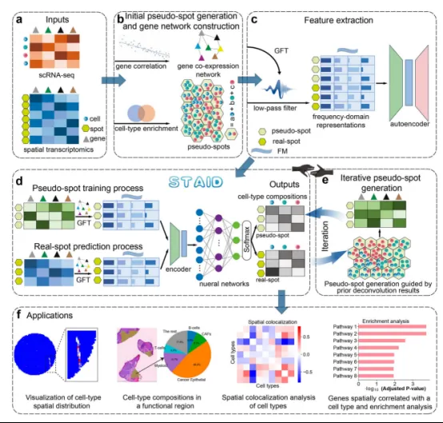
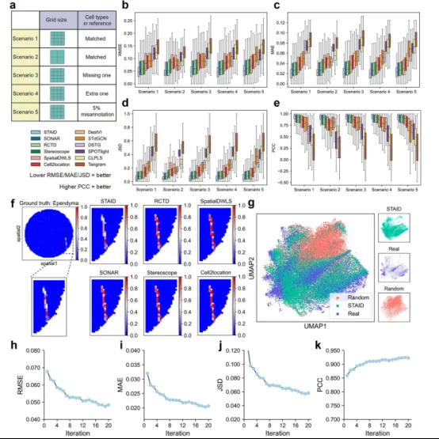
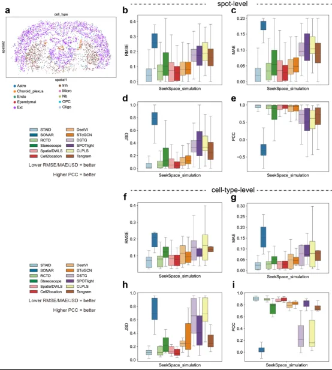
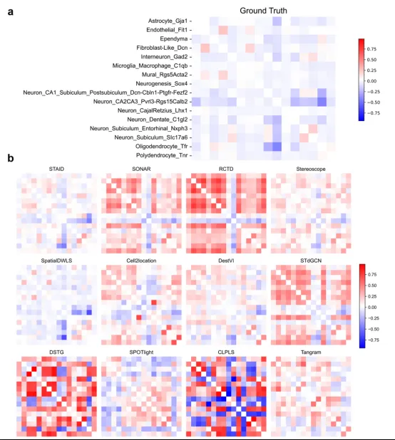
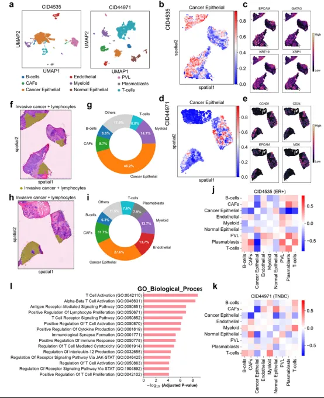
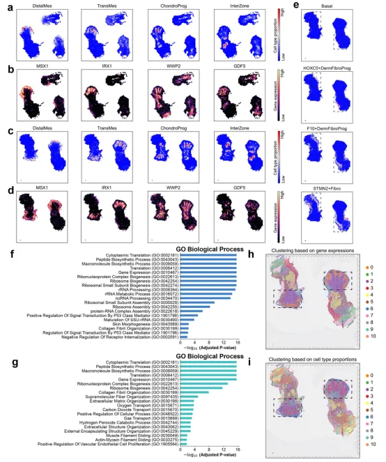
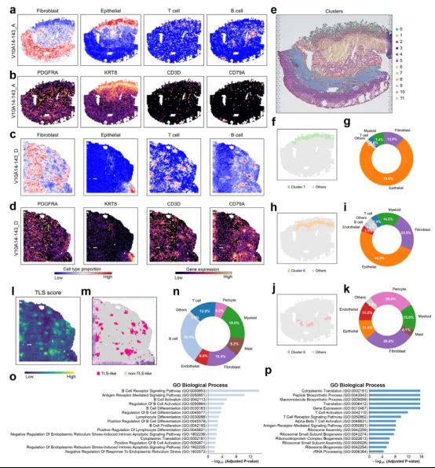

《Advanced Science》前沿工具发布：STAID，空间反卷积自优化深度学习框架
原文：https://mp.weixin.qq.com/s?__biz=MzAwMzIzOTk5OQ==&mid=2247538268&idx=1&sn=3b3f83ec1416a3e1ff9147657289d3b6&chksm=9b3c2f0cac4ba61a4d8c9c7d8372d771d2116bc27e37c4282b578d30cd568d3f46f8590f0b91#rd 合集：文献速递
一、写在前面
文章《 STAID: A Self-Refining Deep Learning Framework forSpatial Cell-Type Deconvolution with Biologically InformedModeling》 （IF=14.1） 发布于**《 Advanced Science》。**
Doi： https://advanced.onlinelibrary.wiley.com/doi/10.1002/advs.75607

空间转录组学（ST）虽然能让我们在组织架构中直观地分析基因表达，但受限于目前主流技术的分辨率，单个测序点往往包含多个细胞的混合信号，难以直接解析单细胞层面的细节。因此，利用单细胞数据作为参考进行“计算去卷积”成为了破局的关键。
然而，现有的深度学习方法通常依赖训练前静态生成的“伪点”作为先验，这些伪点无法在训练中自我优化，且忽略了基因间复杂的共表达依赖，导致推断准确度受限。
针对这一痛点，我们今天分享的文献提出了全新的深度学习框架——STAID。它创新性地构建了一个“伪点生成与模型训练”自我优化的反馈闭环，并引入图信号处理来显式建模基因间的共表达关系。接下来，我们将一起看看STAID如何在乳腺癌、胚胎发育等复杂组织中，实现更精准、稳健的细胞类型解析。
值得一提的是，本文的测试数据有一个我们熟悉的组学：SeekSpace

如果需要单细胞数据分析教学、生信热点全文复现、自测数据个性化分析辅导、实验科研服务和常态化实验学习，欢迎联系客服微信[Biomamba_zhushou]。二、主要内容
一、STAID的工作流程
**STAID 是一种稳健的计算框架，旨在通过整合单细胞RNA测序（scRNA-seq）参考数据与空间转录组（ST）数据，精准绘制细胞类型分布图。**其核心创新在于两点： 1. 高质量数据表征：整合伪点生成与深度学习框架，并利用图信号处理（GSP）捕捉基因共表达关系，去噪并提取深层特征。2. 迭代式优化：通过正向反馈循环，让模型在训练中不断自我进化，生成更真实的训练数据。
首先进行数据输入与初步处理， 以空间转录组数据作为输入，并匹配包含细胞类型注释信息的单细胞RNA测序（scRNA-seq）参考数据（Fig.1a），之后通过对每个空间点进行富集分析，定向采样-仅从“可能存在的细胞类型”中采样生成伪点和图信号处理，基于单细胞数据构建基因共表达网络（Fig.1b），然后进入阶段二，进行模型训练与预测 ，将经过图傅里叶变换（GFT）处理的频域特征（傅里叶模式）输入**自动编码器（Autoencoder）**进行降维和特征提取。伪点的编码特征通过一个多层感知机（MLP），最后一层使用Softmax函数输出细胞类型比例预测值。然后利用伪点已知的真实比例（Ground Truth）与预测值之间的差异，反向传播优化模型参数（Fig.1c-d）。使用迭代伪点优化策略来进行性能提升（Fig.1e），最后STAID能够为多样化的空间转录组数据集提供准确、可靠的细胞类型组成估算，帮助我们更深入地理解组织的空间组织架构和细胞异质性（Fig.1f）。
总的来说，STAID通过引入图信号处理 和迭代伪点优化 机制，成功解决了传统方法中训练数据失真和基因关系忽略的问题。

Fig.1
**二：**综合基准测试展示了 STAID优于现有方法的卓越性能
由于在真实组织中很难获取细胞类型比例的“金标准”（Ground Truth），直接评估去卷积方法的实际性能是不切实际的。在性能评估中，一种常见的做法是从scRNA-seq数据中随机采样并组合多个细胞，以生成合成的测序点（synthetic spots）。虽然这些合成点与真实数据拥有相同的测序模态，但这种细胞的随机聚合无法重现真实组织中观察到的结构化空间组织和共定位模式。因此作者选择提供近单 细胞分辨率的小鼠大脑Slide-seqV2数据集， 并设计了5种场景来全面评估STAID的性能 （Fig.2a）。 分别是网格大小不同以反映不同空间转录组技术的分辨率差异；从参考数据中移除了合成空间转录组数据中存在的一种稀有细胞类型；在单细胞参考数据中添加了一种合成空间转录组数据中不存在的额外细胞类型以及方法对于错误细胞类型注释的容忍度。与此同时，作者选取了11种具有竞争力的去卷积方法（SONAR、RCTD、Cell2location、SpatialDWLS、Stereoscope、DestVI、STdGCN、DSTD、SPOTlight、CLPLS和Tangram与与STAID进行性能比较。结果显示STAID 始终表现出最佳的性能和最高的稳健性，其次是SONAR、RCTD和Stereoscope。相比之下，SPOTlight、CLPLS和Tangram等方法的性能表现欠佳（Fig.2b-e）。
以Ependyma（一种形成脑室上皮衬里的神经支持细胞，在作者的数据集中呈现线状分布模式）为例，STAID准确地推断出了这种线性分布，其预测结果与“金标准”最为吻合。其他方法（除了DSTG和CLPLS）虽然也捕捉到了线状模式，但其结果与真实分布存在不同程度的偏差（Fig.2f）。且作者发现这些性能的提升归功于STAID的迭代训练策略 （Fig.2g-k）。

Fig.2
此外，为了弥补传统低分辨率空间转录组缺乏真实细胞比例标准答案（Ground Truth）的不足，并验证模型在不同技术平台上的泛化能力，作者在两个具备单细胞分辨率的前沿空间转录组平台（MERFISH 和 寻因生物 SeekSpace，图S4a和S5a）上进一步评估了 STAID。依托SeekSpace提供的真实单细胞空间分布作为高质量基准，在所有评估指标（RMSE、MAE、JSD和PCC）中，STAID始终表现优于其他竞争方法，几乎所有比较中均有统计学显著提升（见图S4b–i和S5b–i）。这些结果表明 STAID 在多种空间转录组平台上具有极强的稳健性和高准确性。(SeekSpace 数据来源：OMIX016242, https://ngdc.cncb.ac.cn/omix/release/OMIX016242 )

Fig.S4 SeekSpace单细胞空转数据的细胞类型分布与关键指标评分
最后，作者通过考察细胞类型共定位 （cell-type co-localization），评估了细胞类型预测的生物学相关性，这是许多空间转录组分析中的一个关键环节。在空间点（spot）尺寸相对较大、更适合进行共定位分析的场景 2中，作者使用斯皮尔曼相关系数（Spearman’s coefficient）计算了合成空间数据中的成对空间相关性。结果显示，STAID 和SpatialDWLS 得出的结果与“金标准”最为一致，从而更好地保留了真实的细胞间空间关联模式 （Fig.3a-b）。

Fig.3
**三：**TAID 精准揭示乳腺癌中的肿瘤细胞群与肿瘤微环境的空间组织
为了进一步展示STAID在空间转录组癌症研究中的实用价值，作者将其应用于两个乳腺癌Visium样本（CID4535，雌激素受体阳性ER+；以及CID44971，三阴性乳腺癌TNBC）的分析中。这个案例可以评估STAID在解析细胞组成的同时，捕捉异质性肿瘤微环境（TME）空间组织的能力，首先进行细胞类型注释（Fig.4a），发现其可以精准识别肿瘤上皮细胞（Fig.4b-e），之后发现其还可以解析肿瘤 -免疫微环境， 当聚焦于“ 浸润性癌+淋巴细胞”区域时 ，在CID4535中，该区域主要由肿瘤上皮细胞、髓系细胞、癌症相关成纤维细胞（CAFs）、B细胞和T细胞组成（Fig.4f,g）；而CID44971还额外包含了内皮细胞和浆母细胞（Fig.4h,i）这些差异凸显了不同患者间肿瘤微环境固有的异质性。同时GO分析还可以揭示 T细胞的功能程序（Fig.4I-k）**。**总而言之， STAID不仅以高精度重建了空间细胞组成，还为理解肿瘤异质性和免疫微环境提供了深刻的见解，突显了其在癌症空间转录组学研究中的重要价值。

Fig.4
** **
**四：**STAID 高效解析人类胚胎肢体发育中细胞类型的空间与层级组织
人类肢体芽在受孕后第4周（PCW）末开始出现，并在妊娠前三个月逐渐发育成手臂和腿。肢体发育是一个高度动态且复杂的过程，其中相对均一的肢体芽会分化为多种细胞类型，进而形成各种肢体组织。因此，对空间转录组数据进行精准的去卷积，对于绘制细胞类型分布图以及理解这一发育过程至关重要。接下来，作者将STAID应用于两个分别为 5.6和6.2 PCW的人类肢体Visium数据集，并使用了带有细胞类型注释信息的匹配单细胞参考数据。分析结果的空间模式与原始研究中选取的标记基因表达高度吻合（Fig.5a-d）。同时作者还观察到胚胎肢体中几种细胞类型呈现出有序的空间排列（Fig.5e）。最后，作者评估了基于点的细胞类型组成是否可以作为点聚类（spot clustering）的特征，分别基于基因表达信息和细胞类型组成信息进行了点聚类，结果发现基于细胞类型组成信息的聚类也能有效地重现组织结构（Fig.5f-i）。总而言之， STAID准确地重建了人类胚胎肢体中关键祖细胞群体的空间组织，不仅捕捉到了它们具有生物学意义的分布，还解析了其有序的空间排列。

Fig.5
**五：**STAID 解析克罗恩病患者肠道的空间细胞组织并刻画类TLS免疫微环境的复杂细胞组成
克罗恩病（CD）是一种慢性炎症性肠病，其特征是肠道反复发炎、细胞外基质进行性沉积以及不可逆的狭窄形成。在这项研究中，作者应用STAID来刻画一位CD患者的两个狭窄组织切片（V10A14-143_C, V10A14-143_D）和一个相邻的非狭窄组织切片（V10A14-143_A）的空间细胞组成。为了验证去卷积结果的准确性，作者将主要细胞类型的预测空间比例与其经典标记基因的表达模式进行了比对（Fig.6a-d）。在两个狭窄样本中，STAID揭示了B细胞和T细胞的大量积聚，这表明存在类三级淋巴结构（ TLS-like）的免疫微环境。这类结构曾在慢性发炎的组织中被报道，并可能促成克罗恩病中持续的局部免疫反应。作者根据已验证的特征基因集的平均对数表达量计算了TLS评分，并据此勾勒出类TLS区域（Fig.6l-m）。在这些区域内，B细胞和T细胞均高度富集（Fig.6n），这与淋巴组织的经典细胞组成相一致。此外，对与B细胞和T细胞空间分布高度相关的基因进行功能富集分析 （Fig.6o-p），其结果也与这些细胞的生物学功能高度契合。

Fig.6
三、总结与展望
本研究通过开发并应用STAID 这一空间转录组去卷积算法，系统性地解析了复杂组织中的细胞异质性与空间组织模式。研究不仅在基准数据集上验证了其优越的性能，更通过三个生物学应用场景揭示了其广泛的适用性：发育生物学层面 ：成功解析了小鼠胚胎复杂的发育图谱，捕捉到了精细的空间表达模式；肿瘤微环境层面 ：揭示了乳腺癌组织中免疫排斥的空间特征，明确了特定细胞类型在肿瘤侵袭前沿的分布规律；疾病病理层面 ：在克罗恩病狭窄组织中刻画了类TLS免疫微环境的细胞组成，为理解慢性炎症的维持机制提供了新的视角。
整体而言，该研究提供了一个强大的计算框架，能够将“空间位置”与“细胞身份”精准对应，从而在单细胞分辨率下重构组织的生理与病理结构。

如何联系我们

 留一个领取资料、开箱即用的单细胞分析镜像的微信号[Biomamba_zhushou]，方便各位随时交流。同时我们也构建了交流群矩阵，欢迎大家入群讨论。
大家可以阅读完这几篇之后添加给生信入门初学者的小贴士
没有检索，就没有发言权
留一个领取资料、开箱即用的单细胞分析镜像的微信号[Biomamba_zhushou]，方便各位随时交流。同时我们也构建了交流群矩阵，欢迎大家入群讨论。
大家可以阅读完这几篇之后添加给生信入门初学者的小贴士
没有检索，就没有发言权
已有生信基地联系方式的同学无需重复添加

 您点的每个赞和在看，我都认真当成了喜欢
您点的每个赞和在看，我都认真当成了喜欢